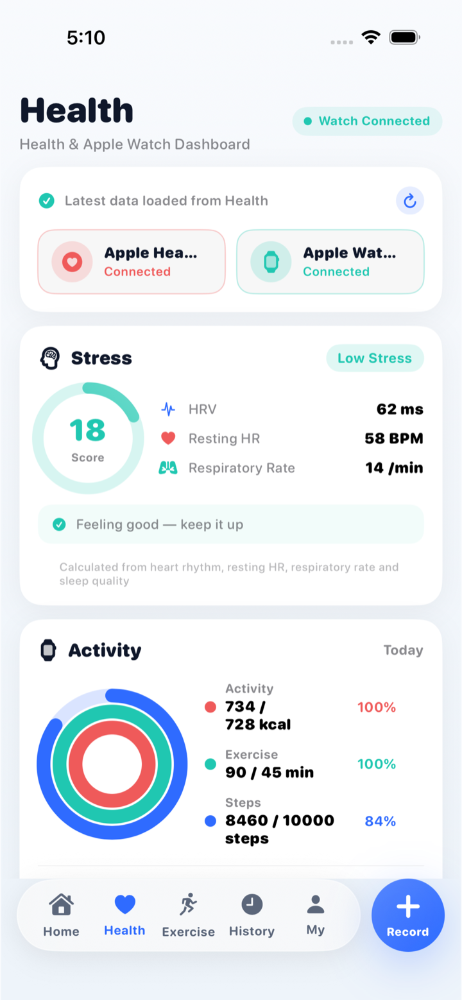
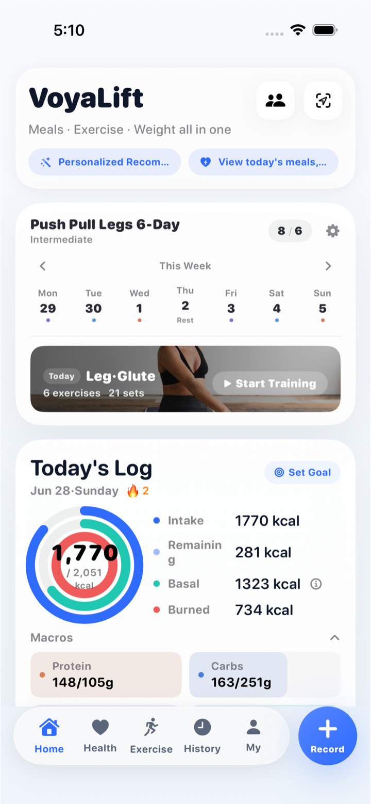
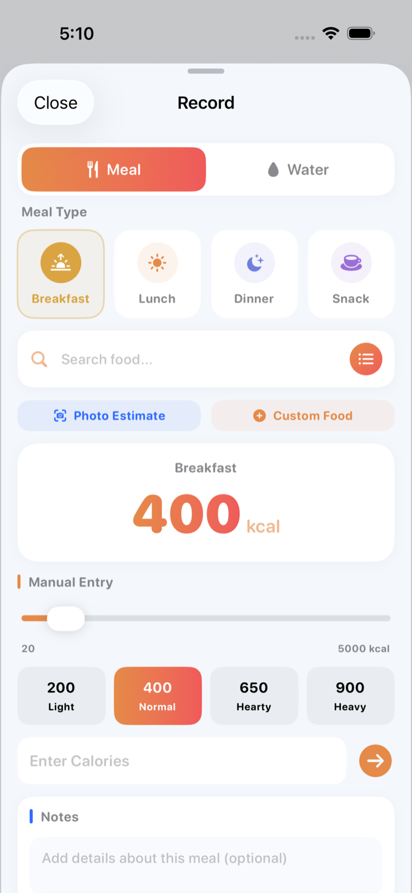
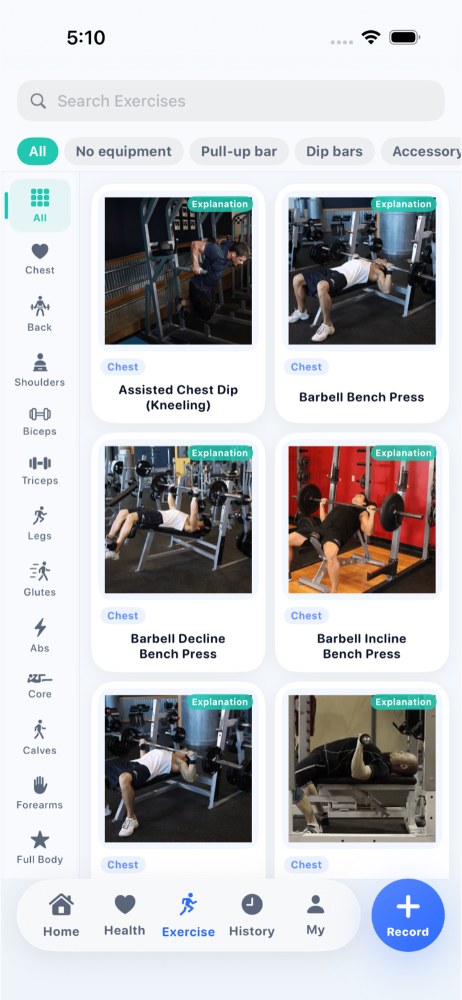
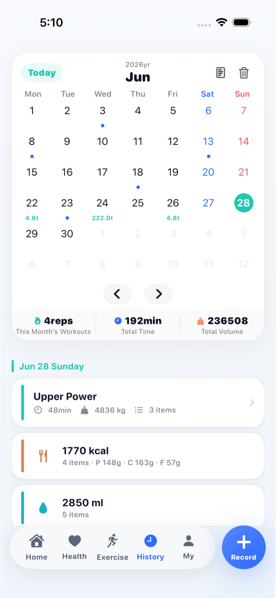

Training plans
Choose practical plans for strength, fat loss, bodyweight training, powerlifting, and gender-specific goals.
Fitness tracking for focused progress
VoyaLift brings workout logging, nutrition tracking, body metrics, Apple Health, and Apple Watch context into a calm app built for everyday training decisions.



Built for the full routine
Choose practical plans for strength, fat loss, bodyweight training, powerlifting, and gender-specific goals.
Record sets, reps, notes, and workout history so each session has context before you start the next one.
Log meals, water, calories, and macros, with optional AI estimates that can be reviewed before saving.
Connect Apple Health and Apple Watch when you want steps, workouts, weight, sleep, heart-related metrics, and recovery context.
Clear views, fewer distractions
VoyaLift keeps the important numbers easy to scan: current workout, food totals, body progress, and health signals. HealthKit, Apple Watch, subscriptions, and AI tools stay optional, so the core app remains testable without extra setup.
Start training, check the week, and review daily calories in one home view.
Bring Apple Health and Watch metrics into the same training picture.

Browse movement options with practical categories and visual guidance.

Follow records, body metrics, notes, and completed training over time.
Record meals, water, calories, and estimates with quick review controls.
Privacy aware by design
Health data access requires permission. AI food and plan features are optional. Subscriptions are handled by Apple, and supported app data controls are available through the app.